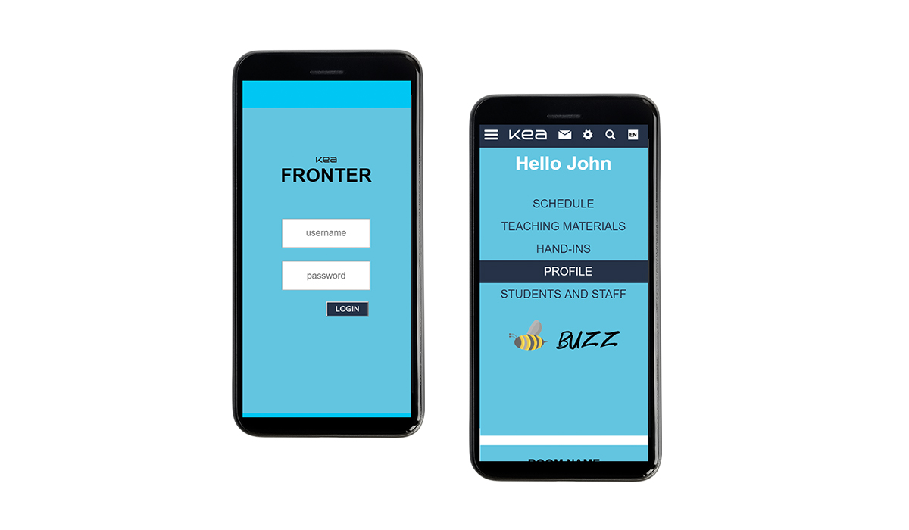

Web prototype - A new "Fronter"
This assignment was individual and based on the "Design Sprint" from the previous week, we had to develop a mobile responsive version of our XD prototype. He had to show at least one functional user flow with tasks and subtasks.
For this assignment I used mainly HTML5 and CSS, and just a little bit jQuery to open the list with friends in the same window and to have the opportunity to choose few of them simultaneously. Probably there is a better solution to do this with Javascript, but then I couldn't find one.
